The Team
Kenza Salgues (#0)
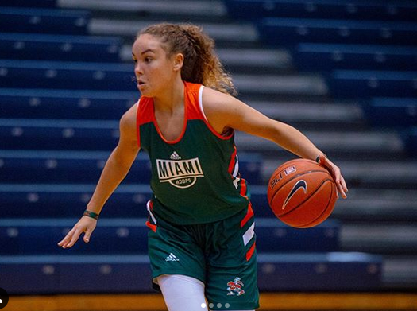Salgues (pronounced SALGH) is a Freshman Guard from Montpellier, France. Born on May 18, 2000. She is Coach Meier's first French player. She graduated from the National Institute of Sport, Expertise and Performance in Paris. She was ranked the No. 20 international player in the 2018 class by ProspectNations.com. She is also a four star prospect and second best player from France.
Moulayna Johnson Sidi Baba (#1)
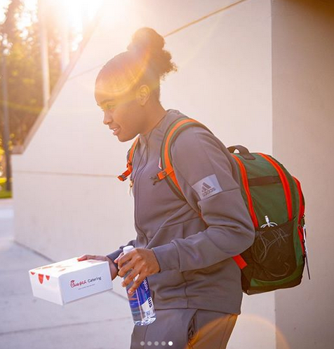Baba (pronounced bah-bah) is a Freshman Guard/Forward from Arsta, Sweden. Born on February 8, 2000. She graduated from Solna Gymnasium. She committed to Miami over offers from Baylor, California, Kansas, Marquette, and San Francisco. She is the second Swedish person Coach Meier ever coached. She is a four-star international prospect according to Kelli Moore Basketball.
Destiny Harden (#3)
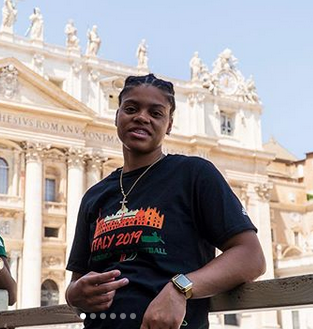Harden is a redshirt Sophomore Forward from Chicago, Illinois. Born on September 24, 1998. She graduated from Morgan Park High School. Listed by ProspectNation.com as a four-star recruit. She was a McDonald's All-American Game nominee. She chose Miami because the coaches made her feel comfortable and felt it would help her go far as a basketball player. Chose Miami over Marquette and many others.
Endia Banks (#4)
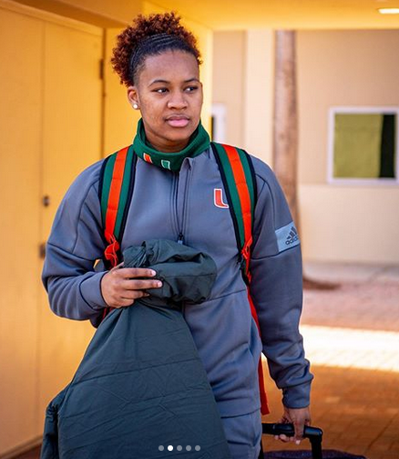Banks is a Junior Guard from Duluth, Georgia. Born on February 9, 1999. She graduated from Duluth High School. Listed as a four-star recruit and the No. 53 player in the country. She was a McDonald's All-American Game nominee. She chose Miami because of the way the coaches treated her and the family-oriented nature of the program. Committed to Miami over Auburn, Cincinnati and Georgia Tech.
Mykea Gray (#5)
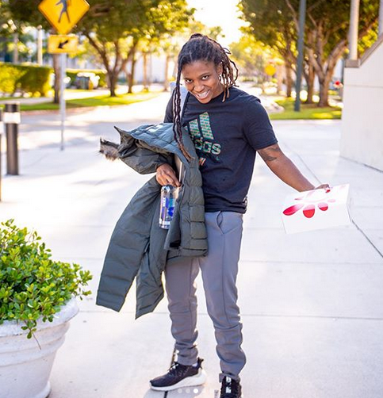Gray is a Junior from Upper Marlboro, Maryland. Born on May 19, 1998. She graduated from SHABACH!Christian Academy Homeschool and played basketball for National Christian Academy. Listed as a four-star recruit and No. 60 overall player and No. 16 Guard. She was a McDonald's All-American Game nominee. She committed to Miami over DePaul, George Washington, Georgia, Penn State, Rhode Island, Seton Hall, USF and Temple.
Jacaira Allen (#12)
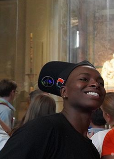Allen is a Redshirt Junior from Pompano Beach, Florida. Born May 31, 1998. She graduated from Dillard High School. Listed as a four-star recruit and No. 43 overall player. McDonald's All-American Game nominee. Her nickname is Iggy.
Taylor Mason (#13)
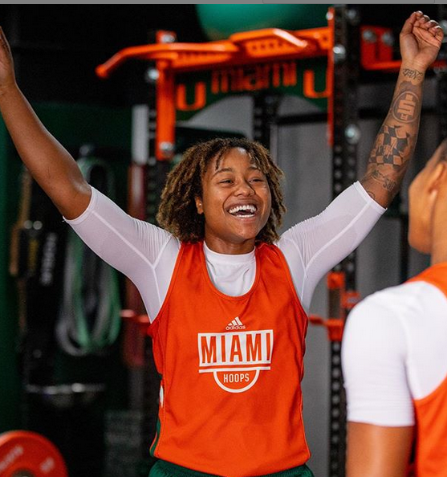Mason is a Junior from Decatur, Georgia. Born on September 8, 1998. She graduated from Norcross High School. Four-star prospect. McDonald's All-American Game nominee. Nickname TayMay. Chose Miami because of the coaching staff and the family feeling of the basketball program. Committed to Miami over Auburn, Georgia, Ole Miss and Virginia.
Jamir Huston (#15)
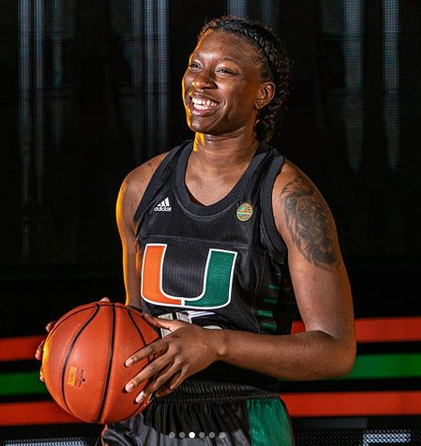Huston is a Sophomore from Cleveland, Ohio. Born on February 16, 2000. She graduated from John Hay High School. Three-star recruit. McDonald's All-American Game nominee. Four year honor roll student. Committed to Miami over Florida State, Michigan, Michigan State and Purdue.
Kelsey Marshall (#20)
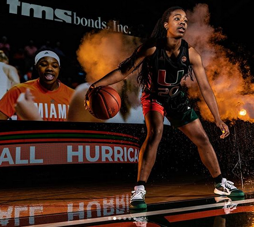Marshall is a Junior from Davie, Florida. Born on February 26, 1999. She graduated from Miami Country Day School. Five-star prospect and No. 44 player in the nation. McDonald's All-American Game nominee. Nickname Kels. Committed to Miami over Illinois and USF.
Brianna Jackson (#21)
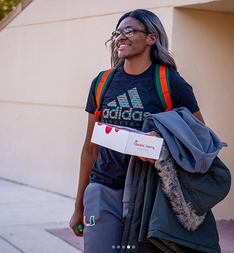Jackson is a Freshman from Virginia Beach, Virginia. Born on October 25, 2000. She graduated from Princess Anne High School. Four-star prospect and No. 92 in the nation. Nickname is Bri. Committed to Miami over Virginia Tech, Florida, and DePaul.
Yasmeen Chang (#22)
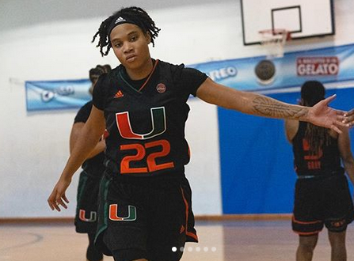Chang is a Freshman from Naples, Florida. Born on March 26, 2001. She graduated from Gulf Coast High School. Ranked No. 21 overall player in the nation. Nickname is Yas.
Beatrice Mompremier (#32)
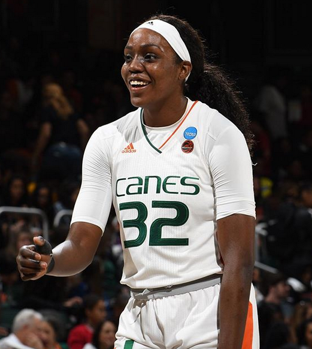Mompremier (pronounced MOM-Prih-Meer) is a Redshirt Senior from Miami, Florida. Born on August 8, 1996. She graduated from Miami Senior High School. Started in the McDonald's All-American Game and made the Jordan Brand Classic. Transferred from Baylor University as a Junior. Four-star recruit and No. 11 player in the country. Nickname is B. Committed to Miami over Florida State.
Sydnee Roby (#44)
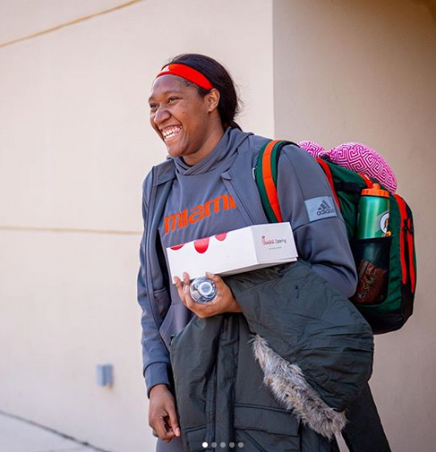Roby is a Freshman from Milwaukee, Wisconsin. Born February 6, 2001. She graduated from Rufus King High School. Committed to Miami over California, Notre Dame, Louisville, and Michigan State.
The Coaching Staff
Katie Meier - Headcoach
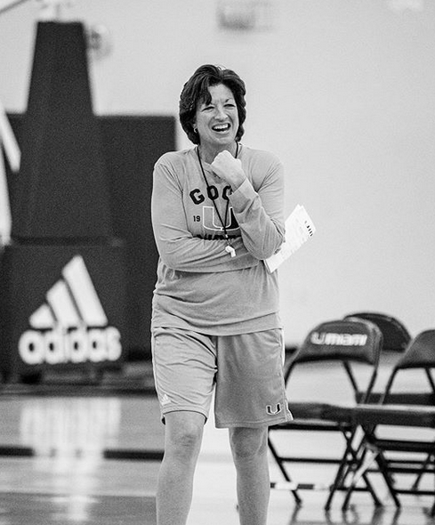- Alma Mater - Duke.
- 15th Season
- 277 wins at Miami
- 22 professional players
- 4 WNBA draft picks
- 1 AP National Coach of the Year
Octavia Blue - Assistant Coach
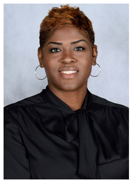- Alma Mater - Miami.
- Eighth Season
Tia Jackson - Assistant Coach
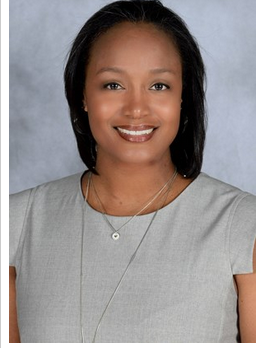- Alma Mater - Iowa.
- Fifth Season
Fitzroy Anthony - Assistant Coach
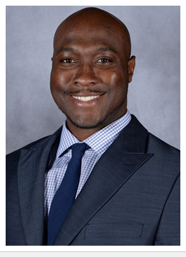- Alma Mater - Palm Beach Atlantic
- Fifth Season
Margie Gill - Director of Basketball Operations & Special Projects
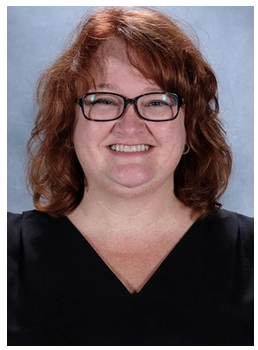- Alma Mater - Florida
- Sixth Season
Lonnette Hall - Director of Basketball Operations/Coordinator of Recruiting
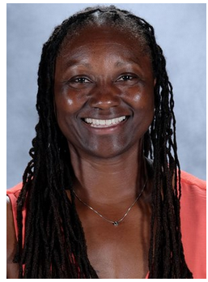- Alma Mater - Cal State Northridge
- 13th Season
Noelle Cobb - Video Coordinator
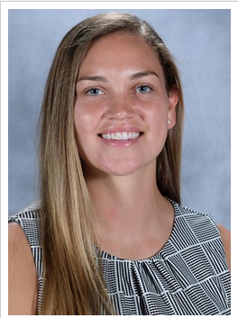- Alma Mater - La Verne
- First Season
Natalie Fontela - Athletic Trainer
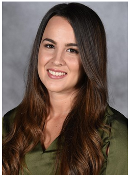- Alma Mater - Miami
- Fifth Season
Brandi Walker - Strength & Conditioning Coach
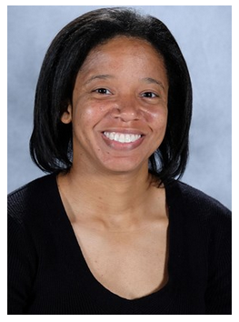- Alma Mater - Towson
- Second Season